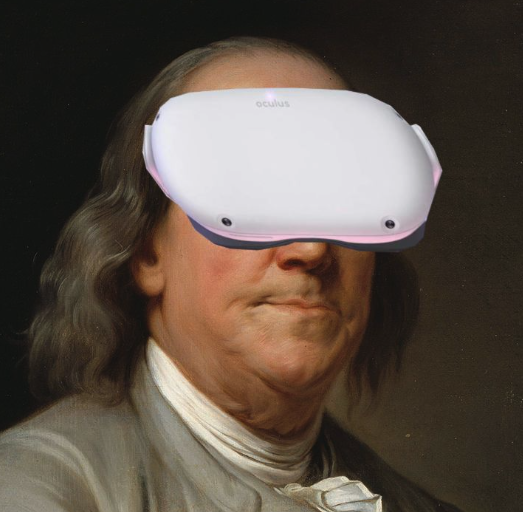

Experiences and Awards
Talroo | Software Engineer I
- Built distributed data pipeline (Databricks) to stream process 200M+ rows of daily site interaction data and create cookie-based "profiles" for 10M+ users to use in search reranking algorithm (Spark, SQL, Python, Scala, Redis, AWS)
- Implemented and fine-tuned LLM-based (BERT) job description tagging model that outperformed current NLP approach; shipped model in a pipeline that stream processes 150M+ daily job descriptions, adds tags, and publishes them (Example search)
Google Summer of Code | Software Engineer, NetworkX
- Implemented parallelized graph algorithms in NetworkX, Python's most popular graph package (6.4 million downloads/week) in Google's Summer of Code program
- Incorporated faster algorithm implementations into custom backend plugin for streamlined usage
- Released the first version of nx-parallel!
 Snap Inc. | Product Challenge 1st Place Winner
Snap Inc. | Product Challenge 1st Place Winner
Akuna Capital | Options Trading Course Invitee
Clinical Simulation Center | Software Engineer, Simulation Team
- Led design of algorithms for real-time hand tracking in world's first open source surgery sim (Demo)
- Created initial backend infrastructure for cloud storage/retrieval in JavaScript
- Built app navigation and simulation creation functionality, with simulations tested on 500+ surgeons
Penn Computer Science Dept. | Teaching Assistant
- Teach 20 students Java + OCaml every semester in Programming Languages and Techniques (Course Page)
- Lead committee to design homeworks and rubrics for 200+ students/semester
 Center for Computational and Genomic Medicine | Software Engineer Intern
Center for Computational and Genomic Medicine | Software Engineer Intern
- Machine learning pipelines for large scale genetic data in Python
- Tooling for researchers on Linux cluster
Cereal4Dinner | Software Engineer
- Built full-stack web app and mobile app for volume of ~1.5K monthly users on a 4-person team
- Work extensively with client: CEO of Cereal4Dinner, a mental health-centered nonprofit
 President of Virtual Reality @ Penn
Evolution and Ecology of Disease Systems Lab | Computational Researcher
- Investigating Bayesian ML methods and network analysis to understand the genetics of fruit fly populations with Python and R
Large Projects
ReactJS, Firebase, TailwindCSS, NextJS, OpenAI API
- Full-feature ChatGPT clone (live demo) with user authentification, conversational chats, cloud storage
- Hot toast notifications, the ability to choose OpenAI model, and HTTP cache invalidation (SWR) for fast UI

RedIsMyFavoriteColor
C++
- Implemented a Redis-like key-value store
- Features include a server, event loop with timers and TTL functionality, backing with AVL trees and hashtable, and data serialization. Built after reading James Smith's book on Redis
Compiler and Disassembler for J
C
- Implemented a compiler in C for a custom stack-based language J
- Implemented a disassembler to return how machine memory has changed after a C program
Other interesting smaller/medium projects

Statistical Analysis of Biological Systems
Python
- Jupyter Notebooks with mathematical modelling of biological phenomena
- Dynamical systems modelling of oscillations, Gillespie direct algorithm simulations, etc.

Shaq Number
Python
- Explore connections between NBA players based on shared teams: given any 2 NBA players creates a graph of their relation where edges are common teams and nodes are other players
My (YouTube channel) on graph theory and algorithms
Fun facts
I'm an avid poker player, hiker, and explorer. I love mint chocolate chip ice cream and eating my way around cities.